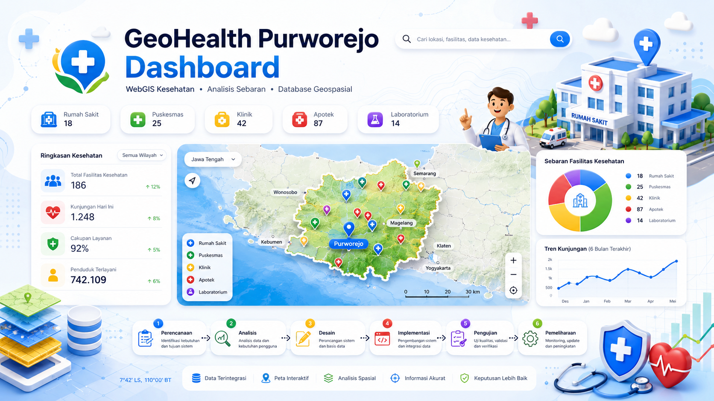

Rumah sakit, puskesmas, klinik, apotek, dan laboratorium ditampilkan bersama filter wilayah, ringkasan statistik, radius layanan, serta halaman pengelolaan data berbasis PostgreSQL/PostGIS.

Setiap fitur diarahkan untuk membaca kondisi persebaran fasilitas kesehatan dan mendukung pencarian lokasi layanan.
Nama fasilitas, jenis, alamat, kecamatan, layanan, status BPJS, jam operasional, dan koordinat tersimpan dalam basis data.
Marker berwarna, popup atribut, legenda, basemap, dan filter membuat pola lokasi lebih mudah dibaca.
Pengguna dapat mencari fasilitas terdekat, melihat radius jangkauan, dan membuka rute ke lokasi tujuan.
Admin dapat menambah, memperbarui, dan menghapus data melalui halaman pengelolaan.
Perbandingan rumah sakit, puskesmas, klinik, apotek, dan laboratorium.
Jumlah fasilitas di tiap kecamatan untuk membaca wilayah padat dan wilayah yang perlu dilengkapi.
Buffer 1 km, 3 km, dan 5 km untuk memperkirakan area jangkauan fasilitas.
Perhitungan jarak lurus dari titik pengguna atau pusat Purworejo.
Minimal dua kelas pengguna terpenuhi, dengan satu role tambahan untuk pengembangan berikutnya.
Membuka peta, mencari fasilitas, memakai filter, melihat statistik, dan mengekspor data.
Login untuk mengelola data fasilitas, layanan, status operasional, dan koordinat.
Menyiapkan pembaruan data lapangan sebelum data dipublikasikan.
Filter, radius layanan, popup, grafik, dan ekspor data tersedia dalam satu halaman.